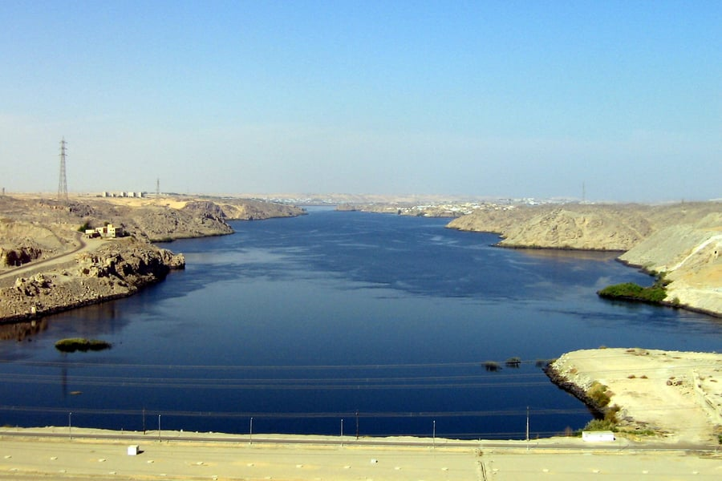
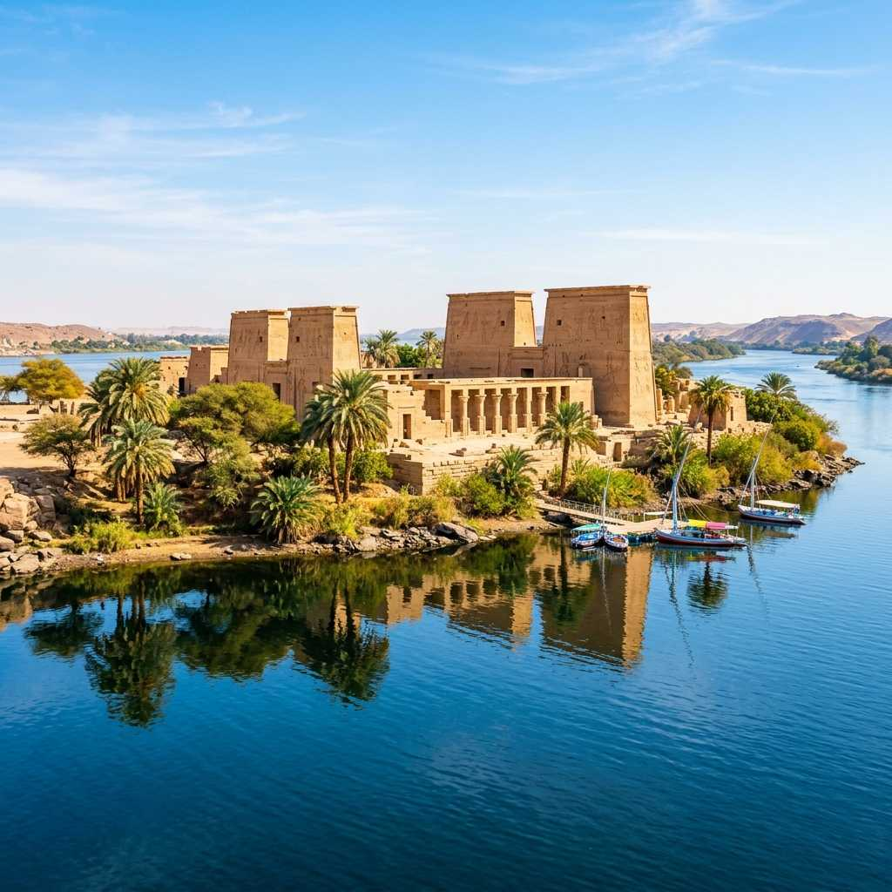
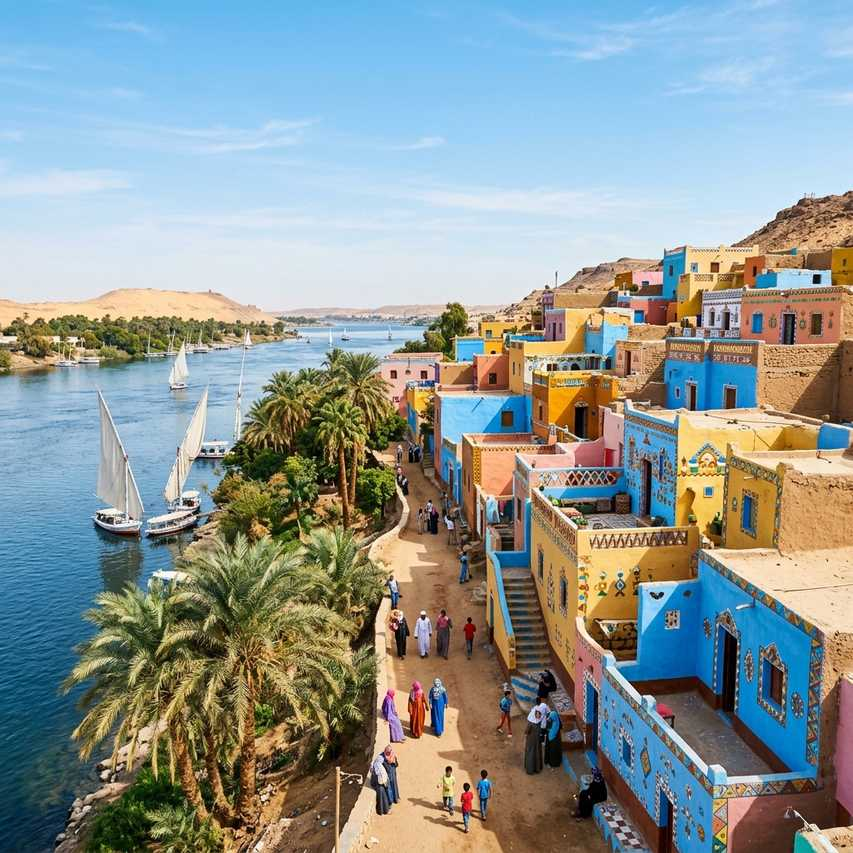
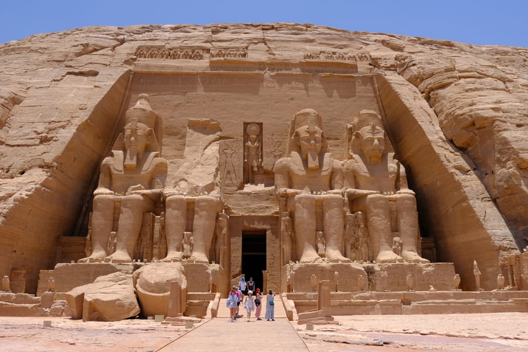

Visuals
Photo Gallery
See the beauty that awaits you.





The Colossal Sun Temple of Ramesses the Great
Abu Simbel is the most awe-inspiring temple in all of Egypt. Four colossal statues of Ramesses II, each standing 20 meters tall, guard the entrance to a temple carved entirely into a mountain cliff face. Twice a year, the rising sun illuminates the inner sanctum in a phenomenon aligned by its ancient builders.
Carved into the mountainside during the reign of Ramesses II (c. 1264 BC), Abu Simbel was designed to intimidate Egypt's southern neighbors and to commemorate Ramesses' victory at the Battle of Kadesh. In the 1960s, the entire temple complex was cut into blocks and relocated 65 meters higher to save it from flooding caused by the Aswan High Dam. This UNESCO-led rescue operation remains one of the greatest engineering feats of the 20th century.
Make the most of your visit with these experiences.
Walk into the mountain temple of Ramesses II, passing chambers covered in battle scenes.
Visit the adjacent temple dedicated to Queen Nefertari, adorned with beautiful reliefs.
Witness the solar alignment on Feb 22 or Oct 22 when sunlight illuminates the inner sanctum.
Capture the temples reflected in Lake Nasser for stunning mirror-image photographs.
Experience the temples illuminated with dramatic narrated projections at night.
Arrive in style via a multi-day luxury cruise across Lake Nasser.
See the beauty that awaits you.



Everything you need to know for a perfect visit.
Most visitors join the organized convoy from Aswan departing at 3:30 AM. It's a 3-hour drive.
EgyptAir operates 45-minute flights from Aswan — less exhausting than the convoy drive.
Feb 22 & Oct 22 are the Sun Festivals — book months in advance as it's packed.
No shops nearby. Bring water, snacks, sunscreen, and a hat. It's remote desert.
The facade faces east — morning light is ideal. The lakeside view at dawn is breathtaking.
Consider a luxury Lake Nasser cruise that stops at Abu Simbel for a unique approach.
October to March. February 22 and October 22 are the Sun Festival dates.

Let our local experts craft the perfect itinerary for your Egyptian adventure.